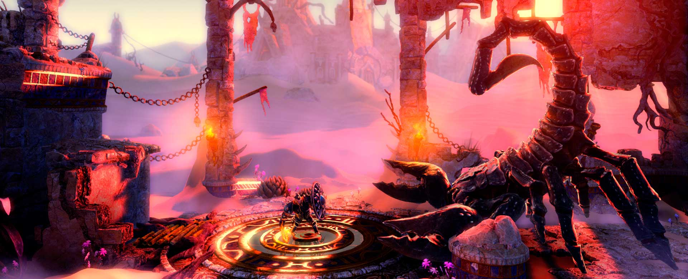
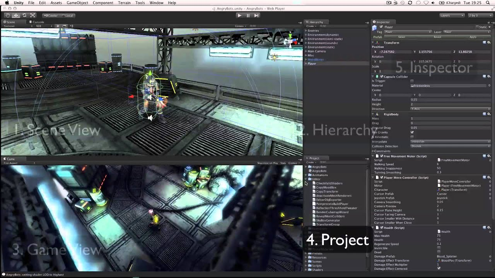

Unity es un motor de videojuego multiplataforma creado por Unity Technologies. Unity está disponible como plataforma de desarrollo para Microsoft Windows, Mac OS, Linux. La plataforma de desarrollo tiene soporte de compilación con diferentes tipos de plataformas (Véase la sección Plataformas objetivo). A partir de su versión 5.4.0 ya no permite el desarrollo de contenido para navegador a través de su plugin web, en su lugar se utiliza WebGL. Unity tiene dos versiones: Unity Professional (pro) y Unity Personal., El motor gráfico utiliza OpenGL (en Windows, Mac y Linux), Direct3D (solo en Windows), OpenGL ES (en Android y iOS), e interfaces propietarias (Wii).
¿Qué juegos se han hecho con Unity?
Los ejemplos más populares son: Rick and Morty: Virtual Rick-ality, Job Simulator o The Lab. Otros grandes juegos destacados: Estos son otros de los grandes títulos destacados hechos con el motor Unity: Lara Croft Go, Cuphead, Inside, Seasons after Fall y Firewatch. Algunos juegos actuales hechos con Unity son “Snipperclip”, un juego exclusivo para Nintendo Switch, las dos versiones de “Overcooked” para Xbox One, PlayStation 4 y Nintendo Switch, y también “Subnautica” para Xbox One y PlayStation 4.

¿Qué contiene el editor de Unity?
La plataforma de Unity se divide en 5 apartados dentro de su editor.
Explorador: Aquí es donde encontraras la lista de los elementos que dispones, además de los elementos propios del editor que puedes utilizar, es un apartado de organización.
Inspector: En este apartado muestra las propiedades de los elementos del videojuego.
Jerarquía: Se catalogará los elementos según su importancia.
Escena: Diseño y maquetación de tu videojuego o una escena de este, donde cada de escena se divide por niveles en el editor.
Juego: Visualiza el videojuego en diferentes resoluciones para comprobar su calidad.

¿Qué puedes lograr con el editor Unity?..
Creación de storytelling o narración de historias.
Creación de contenido cinematográfico.
Conseguir animaciones naturales y realistas.
Pulir y detallar los modelos 3D que contiene el videojuego.
Lograr una gradación de color e iluminación necesario para una perfecta visualización.
Si deseas aprender mas, puedes acceder a este link para acceder a la pagina de Unity Learn, donde podras aprender mas de unity para desarrollar tus propios proyectos con esta grandiosa herramienta: